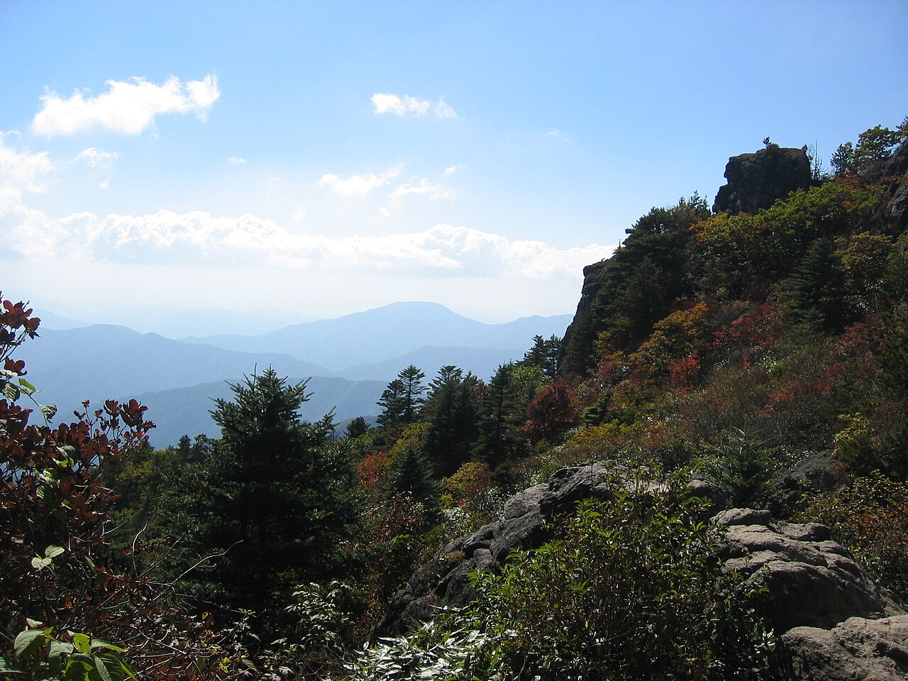
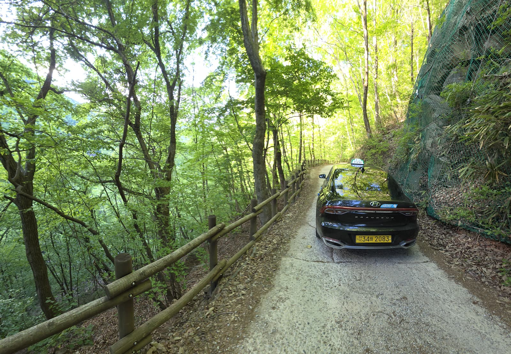

인월·남원 터미널에서 픽업,
성삼재·백무동·뱀사골·정령치·지리산둘레길까지
지리산 전 지역을 운행합니다.
무사고 운전, 편안한 여행!
오랜 무사고 경력의 개인택시가 지리산 구석구석, 안전하게 모십니다.

지리산 숲길·둘레길 구석구석, 넓고 편안하게 모십니다
오랜 무사고 운전 경력으로,
안전하고 편안한 이동을 약속드립니다.
대표 김성수
믿을 수 있는 정식 등록 사업자
사업자등록 407-05-19817
미리 연락 주시면 원하는 시간에 픽업,
새벽 산행 픽업도 예약 가능합니다.
지리산 산행/둘레길/터미널 이동,
편하게 예약하고 안전하게 이동하세요.
첫차보다 일찍,
새벽 산행 출발이 필요한 분
인월 및 남원 터미널에서
지리산으로 바로 가고 싶은 분
성삼재/백무동
등산 들머리까지 편히 가려는 분
지리산둘레길
구간 이동이 필요한 트레커
일행 4명이
함께 이동하려는 분
하산 후
터미널까지 픽업이 필요한 분
인월 및 남원 터미널에서 픽업해
지리산 주요 들머리와 둘레길까지 모십니다.
목적지를 눌러 상세 안내를 확인하세요.
인월 및 남원 터미널에서 성삼재까지,
새벽 산행 픽업도 예약제로 가능합니다.
백무동 탐방로 입구까지 편하게.
일행과 함께 예약해 이동하세요.
정령치 고갯길까지 안전 운행.
운봉/산내 방면도 이동 가능합니다.
뱀사골 탐방 기점까지 이동.
여름 계곡 나들이에도 좋습니다.
홈페이지에 기재된 전화 / 문자 / 카카오톡으로 예약 가능합니다.
픽업장소와 도착일/도착시간만 알려주시면 됩니다.
인월 및 남원 터미널 등 픽업 받으실 장소를 알려주세요.
도착 예정일과 도착 시간을 함께 알려주세요.
전화로 바로, 또는 문자나 카카오톡으로 예약을 확정합니다.
미리 연락 주시면 원하는 시간을 선택할 수 있고,
새벽 픽업도 가능합니다.
최대 4명 탑승 가능
낯선 지리산길, 미리 예약해 두면 시간도 마음도 여유로워집니다.
첫차를 기다리느라 산행이 늦어짐
새벽 픽업 예약으로 원하는 시간에 출발
터미널에서 교통편을 찾아 헤맴
터미널 앞에서 바로 픽업
들머리·둘레길 접근이 막막함
성삼재/백무동/둘레길 구간까지 정확히 이동
일행이 흩어져 따로 이동
최대 4인 함께 편하게 이동
오랜 무사고 운전으로 지리산 구석구석을 잘 아는 개인택시입니다.
오랜 경험이 전제된 노하우로, 더 편안한 여행이 되도록 안전하게 운행합니다.
오랜 무사고 경력의 인증차량
안전을 최우선으로 운행
성삼재/백무동/뱀사골/둘레길
지리산 구석구석 최적 경로 안내
대표 김성수
사업자등록 407-05-19817
전화·문자·카카오톡으로 편하게 예약하세요.
미리 연락 주시면 원하는 시간에 맞춰 드립니다.
전북 남원시 아영면 청계리 38-1 · 개인택시 대표 김성수 · 사업자등록번호 407-05-19817